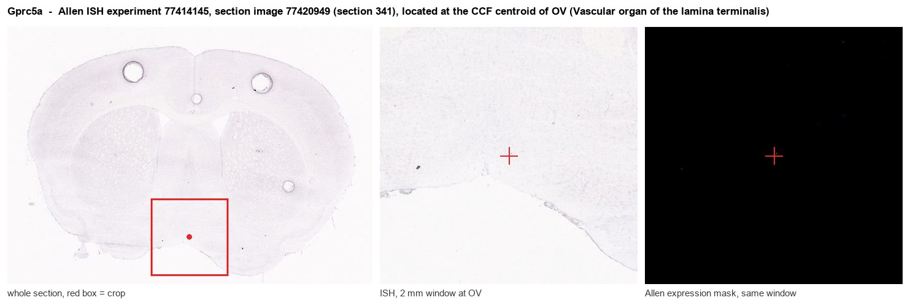

Gprc5a
Retinoic acid-induced protein 3 (G protein-coupled receptor family C group 5 member A) (Retinoic acid-induced gene 1 protein) (RAIG-1)
Spatial tier: REGION_BIASED · Class: GPCR · Top region: OV (Vascular organ of the lamina terminalis) · Positive regions: 43/554
Function in OV: evidence, prediction, innovation
- Gene function
- GPRC5A (RAI3) is an orphan class C, retinoic-acid-inducible seven-transmembrane receptor with an unusually short extracellular domain. It is an epithelial protein that modulates Wnt/beta-catenin, STAT3 and RhoA signalling and tunes growth-factor receptor trafficking; it is best characterised as a lung tumour suppressor and is internalised through galectin-3 binding.
- Region function
- The vascular organ of the lamina terminalis (OVLT) is a sensory circumventricular organ lacking a blood-brain barrier; its glutamatergic osmosensitive neurons detect plasma hypertonicity and drive thirst, vasopressin release and sympathetic/thermoregulatory responses through the SFO-MnPO-PVN network.
- Published in this region
- none No region-specific literature found. GPRC5A has been studied almost exclusively in epithelia and tumours (Richter 2020; Boucheham 2025), and the closest brain-relevant parallel is its epithelial/barrier role, which matches the specialised tanycyte-like ependyma and fenestrated vasculature of the OVLT.
- Predicted function
- Prediction: in the OVLT, GPRC5A is most plausibly expressed by the tanycyte-like ependymal and vascular-associated cells rather than osmosensitive neurons, where it would help maintain the unusual leaky-barrier epithelium of this circumventricular organ and its retinoid-responsive gene programme. Deleting Gprc5a should alter OVLT barrier permeability and tanycyte morphology, secondarily changing how quickly osmotic and hormonal blood signals reach osmosensory neurons, and so blunt or delay drinking onset after a hypertonic salt load.
- Innovation
- ★★★★★ 5/5 An epithelial orphan receptor never examined in brain, in a circumventricular organ whose non-neuronal barrier cells are a live question in thirst biology.
- Tools
- Gprc5a knockout mice (widely used in lung cancer work); anti-GPRC5A antibodies; no selective ligand; OVLT/tanycyte access via Nkx2.1-Cre, Rax-CreER or AAV injection into the lamina terminalis.
- References
Direct evidence located at the region

Allen ISH experiment 77414145, section image 77420949 (section 341): the section that contains the CCF centroid of Vascular organ of the lamina terminalis according to the Allen image-to-atlas alignment (reference_to_image), with a 2 mm window around that point. Left: whole section, red box = window. Middle: ISH signal. Right: Allen's expression-mask view of the same window. open this image in the Allen viewer
Direct spatial evidence

Regional expression figure

Predicted WMB × fine-CCF profile; not direct full-transcriptome spatial measurement.
Spatial profile
Evidence and specificity
- Evidence status
- PREDICTED_FINE
- Direct sources
- None; predicted localization only
- Exclusive threshold
- 12 positive regions out of 554
- Spatial specificity
- 0.315
- Top-region fraction
- 0.045
- Filter status
- PASS
Interpretation limits
- Cell-type-to-region projection is imputed expression, not direct spatial measurement.
- Adult reference atlases do not establish stability across age, sex, strain, state, or disease.
- Transcript abundance does not guarantee protein abundance or genetic-tool performance.